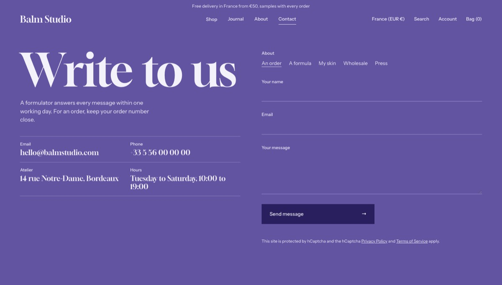
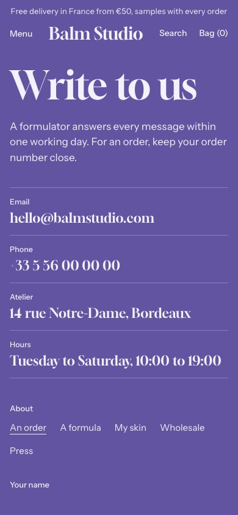

Contact
The contact page: a heading, your details and the contact form.
WhereAny template. Not available in the header or footer group.


What it is for
Your support details and the form, on the Contact page.
How it works
Beside the Heading and the Text, Detail blocks list ways to reach you, each a Label, a Value and an optional link; a detail without a value is not printed. The form has underlined fields and a choice of Subjects, separated by commas, the first one chosen at first. The form works without JavaScript and its messages come back with the page.
Content tips
- Add your email and your phone number as Detail blocks: the demo leaves them empty for you.
- Keep the subjects to a few words each: they are set as words to choose from.
Settings
Section settings (12)
| Setting | Values | Default | Notes |
|---|---|---|---|
| Breadcrumbs on this page |
| Hide | Overrides Theme settings for this page only. Position and separator stay global. |
| Heading | Text | Write to us | |
| Text | Rich text | Say who answers the messages and how fast. | |
| Subject label | Text | About | |
| Subjects | Text | An order, A product, Something else | Separate the subjects with commas. The first one is chosen at first. |
| Button label | Text | Send message | |
| Success message | Text | Message sent. We will reply soon. | |
| Surface |
| Field | |
| Top padding (desktop) | 90 to 250 px, step 2 | 150 px | |
| Bottom padding (desktop) | 0 to 200 px, step 2 | 110 px | |
| Top padding (mobile) | 80 to 200 px, step 2 | 110 px | |
| Bottom padding (mobile) | 0 to 200 px, step 2 | 72 px |
Block: Detail
Detail block settings (3)
| Setting | Values | Default | Notes |
|---|---|---|---|
| Label | Text | ||
| Value | Text | Give a way to reach you | |
| Link | Link | Empty |